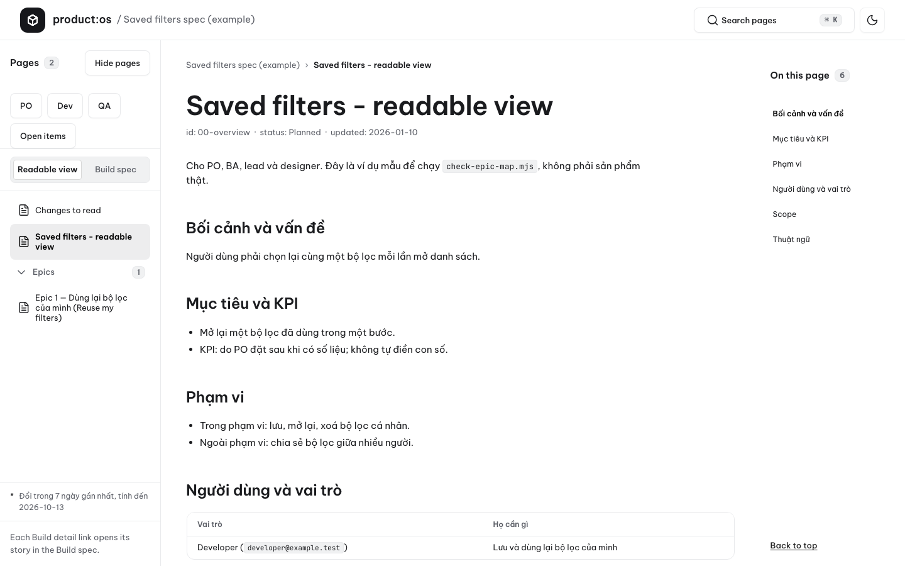
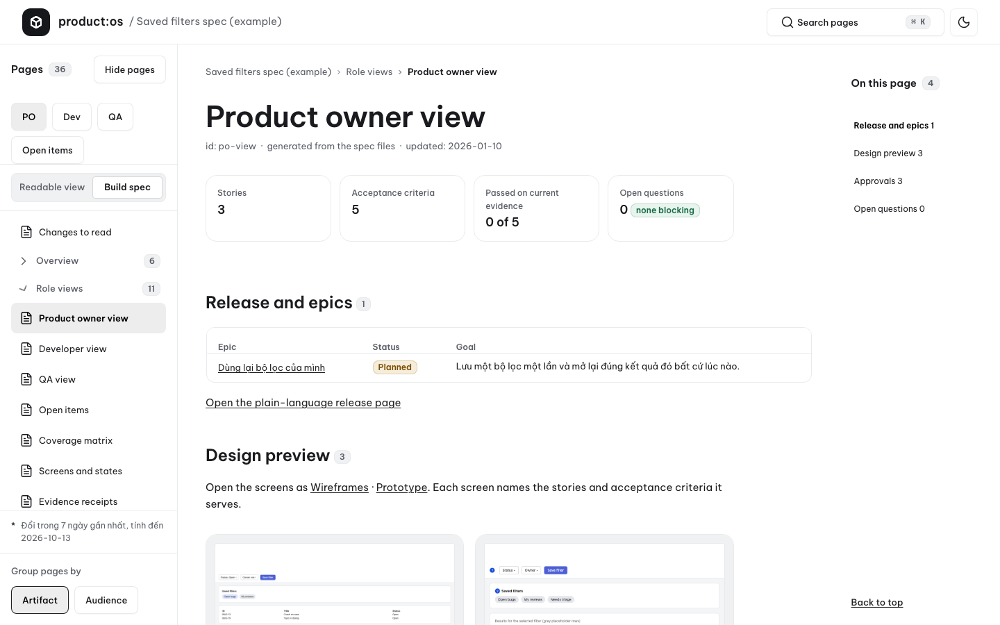
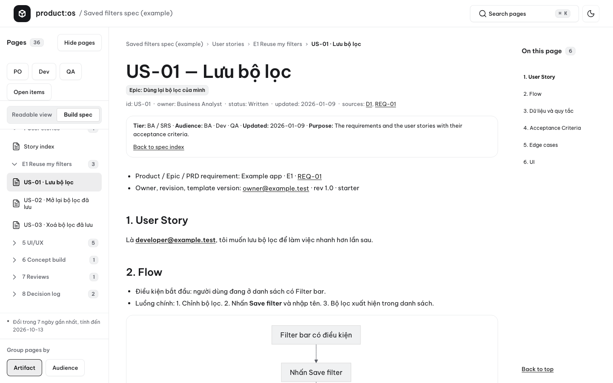
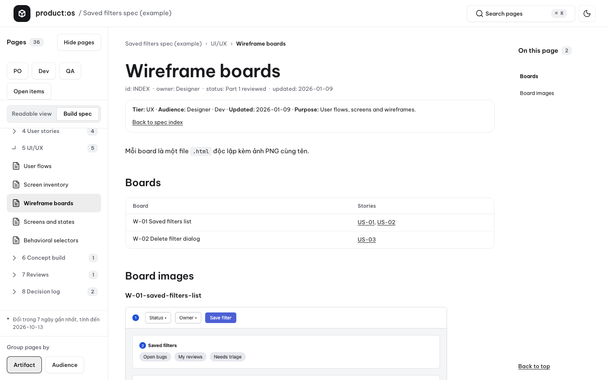
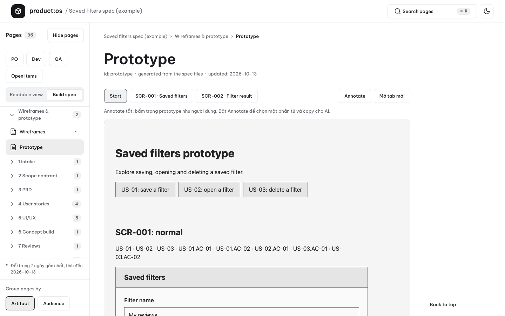

PRODUCT SPEC KIT · PRODUCT:OS
A source-available, local-first kit that turns a product owner's raw brief into a governed specification bundle.
Agents draft and review; the PO owns product rules, scope, and every approval.
01 · Register
The boundary is part of the product.
- Repository
- jangtrinh/product-os-spec-driven
- Requires
- Node plus a writer/reviewer CLI, or manual mode
- Interface
- Claude Code plugin, CLI runner, and offline reader
- Transport
- Local processes; the kit makes no network requests
- Telemetry
- None in the kit
- License
- PolyForm NC 1.0.0
02 · Comparison
A kit for decisions that must stay inspectable.
Raw briefs can leave scope, approvals, test intent, and handoff evidence implicit. This kit makes those decisions explicit without transferring approval authority to an agent.
- PO-owned gates.The PO supplies the raw brief, answers clarifications, and decides G1–G5.
- Independent review.A writer produces stage output; a fresh, read-only reviewer from a different vendor reviews it.
- Evidence over completion.Runner exits, gate files, and PO decisions are evidence; a model completion message is not.
- Local-first operation.Execution is local-first with no telemetry.
03 · Install
Install once.
/plugin marketplace add jangtrinh/product-os-spec-driven
/plugin install spec@product-os-spec-drivenThe plugin exposes the spec command family.
04 · First safe use
Start with inspection, then make the work visible.
- 01Run
/spec:setupUse the doctor to check the selected project and host prerequisites.
- 02Run
/spec:newCreate a project from PO-owned inputs.
- 03Run
/spec:statusInspect gate state, counters, and questions before continuing.
- Run
/spec:rundrafts or resumes the configured pipeline.- Decide
/spec:gaterecords a decision only after the PO chooses.- View
/spec:viewopens the reader output.- Upgrade
/spec:upgradepreviews and asks before an upgrade.
05 · Reader evidence
The specification bundle stays readable.
-

Readable overview Overview, without a hidden handoff.
The reader organizes the material the pipeline makes available to inspect.
-

PO view PO decisions remain in view.
The PO owns the rules, scope, and approvals that move work forward.
-

User story US-01 Stories stay linked to the record.
User-story material remains part of the governed specification bundle.
-

Wireframe boards Wireframe boards, ready to inspect.
The default flow can create linked wireframe material subject to its evidence boundary.
-

Prototype with Annotate Prototype material with annotation.
Prototype output can be opened offline for review before the PO decides the next gate.


06 · FAQ
What the kit does—and does not claim.
What is PRODUCT:OS Spec Driven?
PRODUCT:OS Spec Driven is a source-available, local-first kit that turns a product owner's raw brief into a governed specification bundle. Agents draft and review; the PO owns product rules, scope, and every approval.
How is PRODUCT:OS Spec Driven installed?
Install the Claude Code plugin with /plugin marketplace add jangtrinh/product-os-spec-driven followed by /plugin install spec@product-os-spec-driven.
Can an agent approve a gate?
No. /spec:gate records a decision only after the PO makes the choice in the same session; agents never approve.
Which stages have been proven in a real project?
Only intake has completed a real-model run. Later stages remain not yet proven even where code and tests exist; see known limits.
Does the kit send telemetry or require a network connection?
No. The kit runs local processes with no telemetry and makes no network requests itself. The writer or reviewer CLI you choose contacts its own provider, and this website loads a Buy Me a Coffee widget.
What license is PRODUCT:OS Spec Driven released under?
It is not open source; it is a source-available kit released under the PolyForm Noncommercial 1.0.0 license.
07 · Ecosystem
PRODUCT:OS and DESIGN:OS.
PRODUCT:OS
- PRODUCT:OS Spec Drivenproduct specificationRepository
DESIGN:OS
- DESIGN:OS CLIcliRepository
- Knowledge BuildercompilerRepository
- Figma Plugin & CLIpluginRepository
- SVG Animation EngineengineRepository
- 3D Blender Agent3d / cadRepository
- OPAH ONE DronehardwareRepository
- GitHub Pages EnginepagesRepository
- Apple Design OSswiftuiRepository
- Agent TeacherpedagogyRepository
- Origami CADpackagingRepository
- Voice UX Architecturevoice-aiRepository
- Code2Flowast / auditRepository
- Generative UIruntimeRepository
08 · Read next